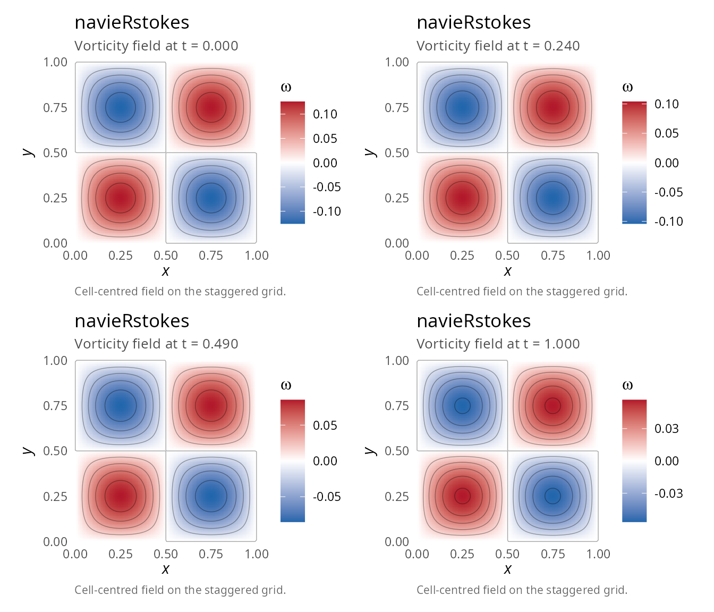
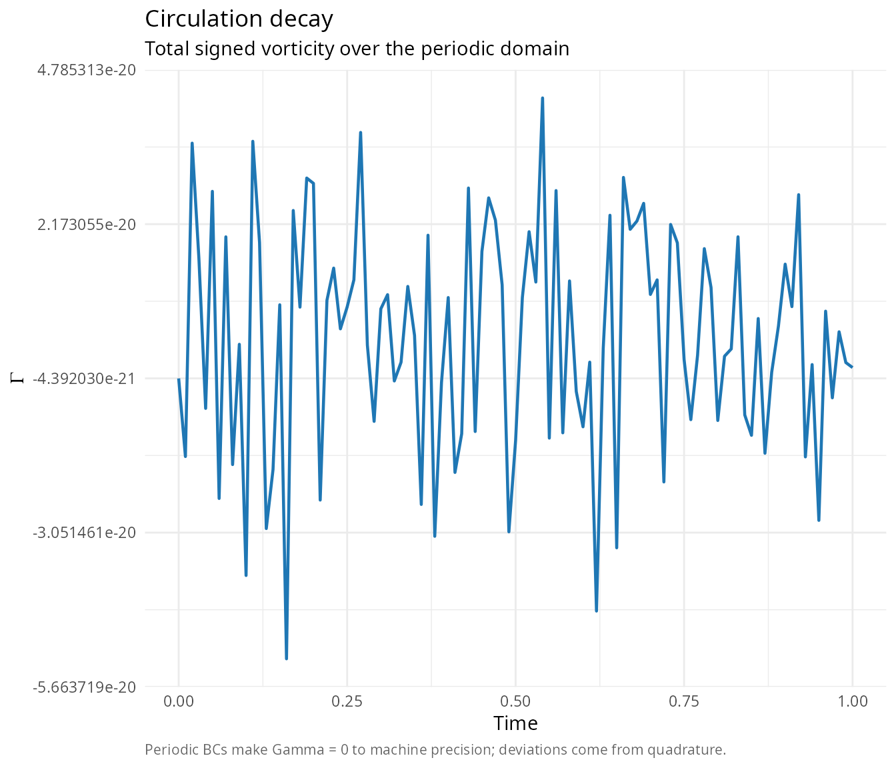
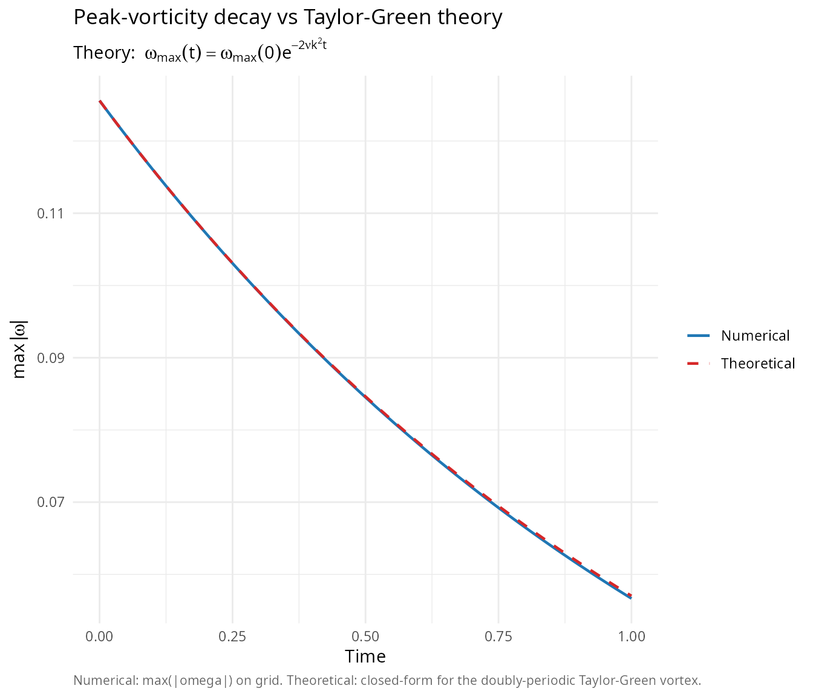
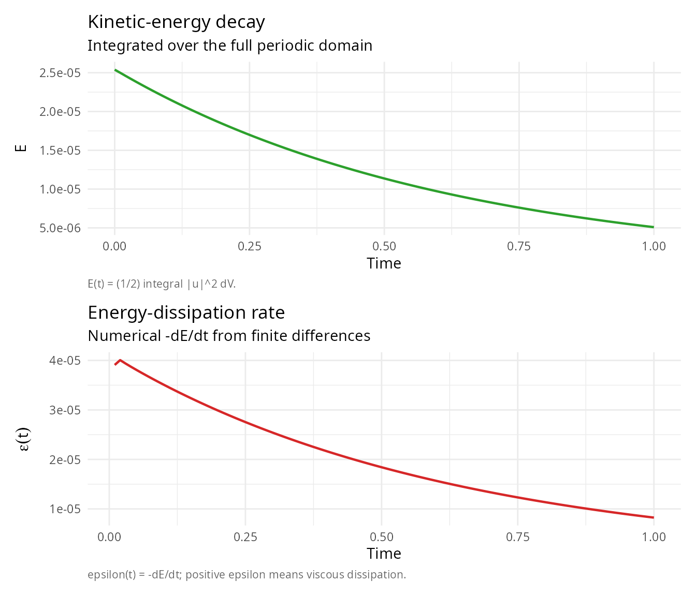
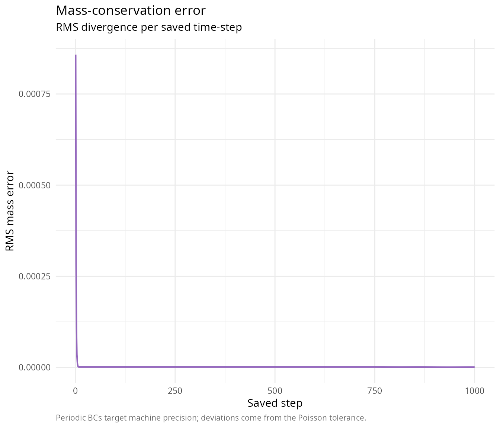
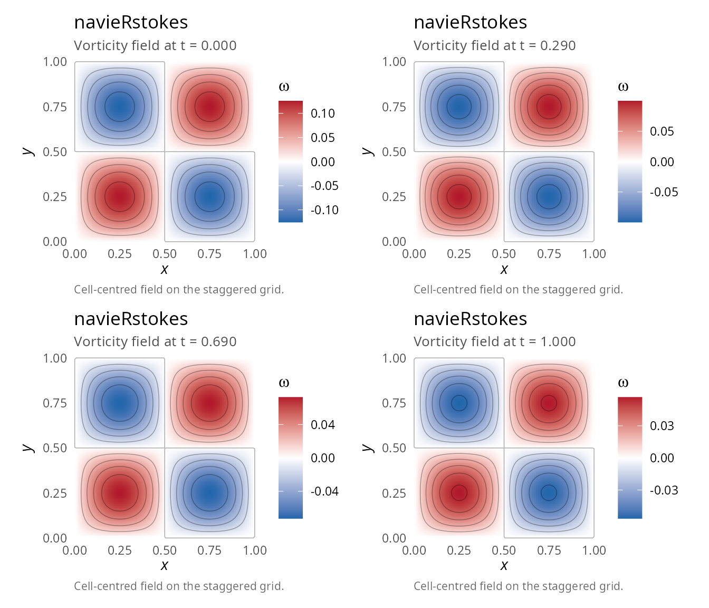
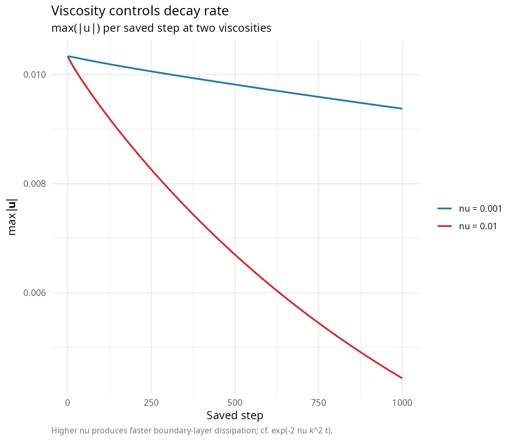

Vortex decay and viscous dissipation
Pablo Almaraz, RElab
2026-04-27
Source:vignettes/vortex-decay.Rmd
vortex-decay.RmdOverview
This vignette demonstrates the simulation of a decaying vortex using periodic boundary conditions. This is an excellent test case for:
- Periodic boundary condition implementation
- Conservation of circulation
- Numerical diffusion assessment
- Vorticity dynamics
Problem description
Initial condition
We use the Taylor-Green vortex [1], which is analytically divergence-free and provides stable, predictable vortex dynamics:
\[ u(x,y,t) = A\sin(kx)\cos(ky) e^{-2\nu k^2 t} \]
\[ v(x,y,t) = -A\cos(kx)\sin(ky) e^{-2\nu k^2 t} \]
where: - \(A\) is the amplitude - \(k = 2\pi/L\) is the wave number (with \(L\) the domain length) - \(\nu\) is the kinematic viscosity
Note: This sign convention matches the package’s
vortex_ic() function and taylor_green_force().
The vorticity field is \(\omega =
2Ak\sin(kx)\sin(ky)\), consisting of alternating
positive/negative patches.
Implementation
library(navieRstokes)
# Use package's Taylor-Green vortex (analytically divergence-free)
# This is the most stable initial condition for periodic BCs
# Simulation parameters
result <- simulate_navier_stokes(
nx = 128, ny = 128,
lx = 1.0, ly = 1.0,
dt = 0.001, nt = 1000,
nu = 0.01, # Moderate viscosity
initial_condition = function(x, y) vortex_ic(x, y, A = 0.01), # Small amplitude!
boundary_condition = list(type = "periodic"),
# Using optimized defaults: jacobi solver
save_interval = 10
)
#> ¡ Starting Navier-Stokes simulation
#> Grid: 128 x 128, Reynolds number (approx): 100.00
#> Step 100/1000 | Mass error: 9.91e-07 | CFL: 0.00 | Pressure iter: 4
#> Step 200/1000 | Mass error: 9.92e-07 | CFL: 0.00 | Pressure iter: 2
#> Step 300/1000 | Mass error: 9.96e-07 | CFL: 0.00 | Pressure iter: 1
#> Step 400/1000 | Mass error: 9.96e-07 | CFL: 0.00 | Pressure iter: 1
#> Step 500/1000 | Mass error: 9.96e-07 | CFL: 0.00 | Pressure iter: 1
#> Step 600/1000 | Mass error: 9.97e-07 | CFL: 0.00 | Pressure iter: 1
#> Step 700/1000 | Mass error: 9.84e-07 | CFL: 0.00 | Pressure iter: 1
#> Step 800/1000 | Mass error: 8.42e-07 | CFL: 0.00 | Pressure iter: 1
#> Step 900/1000 | Mass error: 7.69e-07 | CFL: 0.00 | Pressure iter: 1
#> Step 1000/1000 | Mass error: 7.81e-07 | CFL: 0.00 | Pressure iter: 1
#> ✔ Simulation completed successfully
cat("Vortex decay simulation completed\n")
#> Vortex decay simulation completed
cat("Mean mass error:", result$diagnostics$mean_mass_error, "\n")
#> Mean mass error: 2.248671e-06
cat("Max velocity:", max(result$diagnostics$max_velocity), "\n")
#> Max velocity: 0.0101682Important: Use small amplitude (A = 0.01) for stability. Large amplitudes cause numerical explosions.
Visualization
Vorticity evolution
library(patchwork)
p1 <- plot(result, time_index = 1, plot_type = "vorticity")
p2 <- plot(result, time_index = 25, plot_type = "vorticity")
p3 <- plot(result, time_index = 50, plot_type = "vorticity")
p4 <- plot(result, time_index = NULL, plot_type = "vorticity")
(p1 | p2) / (p3 | p4)
#> Warning: The following aesthetics were dropped during statistical transformation: fill.
#> ℹ This can happen when ggplot fails to infer the correct grouping structure in
#> the data.
#> ℹ Did you forget to specify a `group` aesthetic or to convert a numerical
#> variable into a factor?
#> The following aesthetics were dropped during statistical transformation: fill.
#> ℹ This can happen when ggplot fails to infer the correct grouping structure in
#> the data.
#> ℹ Did you forget to specify a `group` aesthetic or to convert a numerical
#> variable into a factor?
#> The following aesthetics were dropped during statistical transformation: fill.
#> ℹ This can happen when ggplot fails to infer the correct grouping structure in
#> the data.
#> ℹ Did you forget to specify a `group` aesthetic or to convert a numerical
#> variable into a factor?
#> The following aesthetics were dropped during statistical transformation: fill.
#> ℹ This can happen when ggplot fails to infer the correct grouping structure in
#> the data.
#> ℹ Did you forget to specify a `group` aesthetic or to convert a numerical
#> variable into a factor?
Quantitative analysis
Circulation decay
The circulation \(\Gamma = \oint \mathbf{u} \cdot d\mathbf{l}\) should be conserved in inviscid flow but decays due to viscosity:
# Calculate total circulation over time
n_times <- dim(result$u)[3]
circulation <- numeric(n_times)
for (t_idx in 1:n_times) {
u <- result$u[, , t_idx]
v <- result$v[, , t_idx]
# Approximate circulation as sum of vorticity
omega <- compute_vorticity(
u, v,
result$parameters$dx,
result$parameters$dy
)
circulation[t_idx] <- sum(omega) * result$parameters$dx * result$parameters$dy
}
library(ggplot2)
ggplot(data.frame(t = result$t, circulation = circulation),
aes(x = t, y = circulation)) +
geom_line(linewidth = 0.8, colour = "#1F77B4") +
labs(title = "Circulation decay",
subtitle = "Total signed vorticity over the periodic domain",
caption = "Periodic BCs make Gamma = 0 to machine precision; deviations come from quadrature.",
x = "Time", y = expression(Gamma)) +
theme_minimal(base_size = 11) +
theme(plot.caption = element_text(color = "grey40", size = 8, hjust = 0))
Peak vorticity decay
# Calculate peak vorticity over time
peak_vorticity <- numeric(n_times)
for (t_idx in 1:n_times) {
u <- result$u[, , t_idx]
v <- result$v[, , t_idx]
omega <- compute_vorticity(
u, v,
result$parameters$dx,
result$parameters$dy
)
peak_vorticity[t_idx] <- max(abs(omega))
}
# Theoretical decay for Taylor-Green vortex: exp(-2*nu*k^2*t)
k <- 2 * pi / result$parameters$lx
theory <- peak_vorticity[1] * exp(-2 * result$parameters$nu * k^2 * result$t)
df_peak <- data.frame(
t = rep(result$t, 2),
omega_peak = c(peak_vorticity, theory),
series = factor(rep(c("Numerical", "Theoretical"), each = length(result$t)),
levels = c("Numerical", "Theoretical"))
)
ggplot(df_peak, aes(x = t, y = omega_peak,
colour = series, linetype = series)) +
geom_line(linewidth = 0.8) +
scale_colour_manual(values = c(Numerical = "#1F77B4", Theoretical = "#D62728")) +
scale_linetype_manual(values = c(Numerical = 1, Theoretical = 2)) +
labs(title = "Peak-vorticity decay vs Taylor-Green theory",
subtitle = bquote("Theory: "~omega[max](t)==omega[max](0)*e^{-2*nu*k^2*t}),
caption = "Numerical: max(|omega|) on grid. Theoretical: closed-form for the doubly-periodic Taylor-Green vortex.",
x = "Time", y = expression(max(group("|", omega, "|"))),
colour = NULL, linetype = NULL) +
theme_minimal(base_size = 11) +
theme(plot.caption = element_text(color = "grey40", size = 8, hjust = 0))
Energy decay
The kinetic energy \(E = \frac{1}{2}\int |\mathbf{u}|^2 dV\) decays due to viscous dissipation:
# Calculate kinetic energy over time
kinetic_energy <- numeric(n_times)
for (t_idx in 1:n_times) {
u <- result$u[, , t_idx]
v <- result$v[, , t_idx]
speed_squared <- u^2 + v^2
kinetic_energy[t_idx] <- 0.5 * sum(speed_squared) *
result$parameters$dx * result$parameters$dy
}
p_E <- ggplot(data.frame(t = result$t, E = kinetic_energy),
aes(x = t, y = E)) +
geom_line(linewidth = 0.8, colour = "#2CA02C") +
labs(title = "Kinetic-energy decay",
subtitle = "Integrated over the full periodic domain",
caption = "E(t) = (1/2) integral |u|^2 dV.",
x = "Time", y = "E") +
theme_minimal(base_size = 11) +
theme(plot.caption = element_text(color = "grey40", size = 8, hjust = 0))
dissipation_rate <- -diff(kinetic_energy) / diff(result$t)
p_diss <- ggplot(data.frame(t = result$t[-1], eps = dissipation_rate),
aes(x = t, y = eps)) +
geom_line(linewidth = 0.8, colour = "#D62728") +
labs(title = "Energy-dissipation rate",
subtitle = "Numerical -dE/dt from finite differences",
caption = "epsilon(t) = -dE/dt; positive epsilon means viscous dissipation.",
x = "Time", y = expression(epsilon(t))) +
theme_minimal(base_size = 11) +
theme(plot.caption = element_text(color = "grey40", size = 8, hjust = 0))
p_E / p_diss
Mass conservation
Periodic boundary conditions should maintain perfect mass conservation:
ggplot(data.frame(step = seq_along(result$diagnostics$mass_error),
err = result$diagnostics$mass_error),
aes(x = step, y = err)) +
geom_line(linewidth = 0.7, colour = "#9467BD") +
labs(title = "Mass-conservation error",
subtitle = "RMS divergence per saved time-step",
caption = "Periodic BCs target machine precision; deviations come from the Poisson tolerance.",
x = "Saved step", y = "RMS mass error") +
theme_minimal(base_size = 11) +
theme(plot.caption = element_text(color = "grey40", size = 8, hjust = 0))
cat("\nMass conservation:\n")
#>
#> Mass conservation:
cat(" Mean error:", result$diagnostics$mean_mass_error, "\n")
#> Mean error: 2.248671e-06
cat(" Max error:", result$diagnostics$max_mass_error, "\n")
#> Max error: 0.0008581079With periodic BCs, mass error should be near machine precision (~1e-16 or better).
Taylor-Green vortex dynamics
The Taylor-Green vortex exhibits characteristic behavior:
q1 <- plot(result, time_index = 1, plot_type = "vorticity")
q2 <- plot(result, time_index = 30, plot_type = "vorticity")
q3 <- plot(result, time_index = 70, plot_type = "vorticity")
q4 <- plot(result, time_index = NULL, plot_type = "vorticity")
(q1 | q2) / (q3 | q4)
#> Warning: The following aesthetics were dropped during statistical transformation: fill.
#> ℹ This can happen when ggplot fails to infer the correct grouping structure in
#> the data.
#> ℹ Did you forget to specify a `group` aesthetic or to convert a numerical
#> variable into a factor?
#> The following aesthetics were dropped during statistical transformation: fill.
#> ℹ This can happen when ggplot fails to infer the correct grouping structure in
#> the data.
#> ℹ Did you forget to specify a `group` aesthetic or to convert a numerical
#> variable into a factor?
#> The following aesthetics were dropped during statistical transformation: fill.
#> ℹ This can happen when ggplot fails to infer the correct grouping structure in
#> the data.
#> ℹ Did you forget to specify a `group` aesthetic or to convert a numerical
#> variable into a factor?
#> The following aesthetics were dropped during statistical transformation: fill.
#> ℹ This can happen when ggplot fails to infer the correct grouping structure in
#> the data.
#> ℹ Did you forget to specify a `group` aesthetic or to convert a numerical
#> variable into a factor?
Parameter sensitivity
Effect of viscosity
Higher viscosity leads to faster decay:
# Compare different viscosities
result_low_nu <- simulate_navier_stokes(
nx = 64, ny = 64, lx = 1.0, ly = 1.0,
dt = 0.001, nt = 1000, nu = 0.001, # Low viscosity
initial_condition = function(x, y) vortex_ic(x, y, A = 0.01),
boundary_condition = list(type = "periodic"),
save_interval = 10
)
#> ¡ Starting Navier-Stokes simulation
#> Grid: 64 x 64, Reynolds number (approx): 1000.00
#> Step 100/1000 | Mass error: 1.22e-05 | CFL: 0.00 | Pressure iter: 1
#> Step 200/1000 | Mass error: 1.23e-06 | CFL: 0.00 | Pressure iter: 1
#> Step 300/1000 | Mass error: 3.31e-07 | CFL: 0.00 | Pressure iter: 1
#> Step 400/1000 | Mass error: 6.17e-07 | CFL: 0.00 | Pressure iter: 1
#> Step 500/1000 | Mass error: 1.35e-07 | CFL: 0.00 | Pressure iter: 1
#> Step 600/1000 | Mass error: 3.96e-07 | CFL: 0.00 | Pressure iter: 1
#> Step 700/1000 | Mass error: 3.40e-07 | CFL: 0.00 | Pressure iter: 1
#> Step 800/1000 | Mass error: 1.05e-07 | CFL: 0.00 | Pressure iter: 1
#> Step 900/1000 | Mass error: 3.22e-07 | CFL: 0.00 | Pressure iter: 1
#> Step 1000/1000 | Mass error: 1.17e-07 | CFL: 0.00 | Pressure iter: 1
#> ✔ Simulation completed successfully
result_high_nu <- simulate_navier_stokes(
nx = 64, ny = 64, lx = 1.0, ly = 1.0,
dt = 0.001, nt = 1000, nu = 0.01, # High viscosity
initial_condition = function(x, y) vortex_ic(x, y, A = 0.01),
boundary_condition = list(type = "periodic"),
save_interval = 10
)
#> ¡ Starting Navier-Stokes simulation
#> Grid: 64 x 64, Reynolds number (approx): 100.00
#> Step 100/1000 | Mass error: 9.31e-07 | CFL: 0.00 | Pressure iter: 1
#> Step 200/1000 | Mass error: 6.38e-07 | CFL: 0.00 | Pressure iter: 1
#> Step 300/1000 | Mass error: 6.66e-07 | CFL: 0.00 | Pressure iter: 1
#> Step 400/1000 | Mass error: 5.54e-07 | CFL: 0.00 | Pressure iter: 1
#> Step 500/1000 | Mass error: 3.33e-07 | CFL: 0.00 | Pressure iter: 1
#> Step 600/1000 | Mass error: 4.87e-07 | CFL: 0.00 | Pressure iter: 1
#> Step 700/1000 | Mass error: 2.42e-07 | CFL: 0.00 | Pressure iter: 1
#> Step 800/1000 | Mass error: 2.95e-07 | CFL: 0.00 | Pressure iter: 1
#> Step 900/1000 | Mass error: 2.82e-07 | CFL: 0.00 | Pressure iter: 1
#> Step 1000/1000 | Mass error: 1.25e-07 | CFL: 0.00 | Pressure iter: 1
#> ✔ Simulation completed successfully
df_visc <- data.frame(
step = rep(seq_along(result_low_nu$diagnostics$max_velocity), 2),
Umax = c(result_low_nu$diagnostics$max_velocity,
result_high_nu$diagnostics$max_velocity),
nu = factor(rep(c("nu = 0.001", "nu = 0.01"),
each = length(result_low_nu$diagnostics$max_velocity)))
)
ggplot(df_visc, aes(x = step, y = Umax, colour = nu)) +
geom_line(linewidth = 0.8) +
scale_colour_manual(values = c("nu = 0.001" = "#1F77B4", "nu = 0.01" = "#D62728")) +
labs(title = "Viscosity controls decay rate",
subtitle = "max(|u|) per saved step at two viscosities",
caption = "Higher nu produces faster boundary-layer dissipation; cf. exp(-2 nu k^2 t).",
x = "Saved step", y = expression(max(group("|", bold(u), "|"))),
colour = NULL) +
theme_minimal(base_size = 11) +
theme(plot.caption = element_text(color = "grey40", size = 8, hjust = 0))
Accuracy and performance notes
Numerical accuracy
The solver uses first-order upwind differencing for convection and first-order explicit Euler for time integration. This provides overall O(Δx) + O(Δt) accuracy. The upwind scheme introduces numerical diffusion of order O(|u|Δx/2), which adds to the physical viscosity. For low Reynolds number flows on coarse grids, the effective viscosity can be significantly higher than the specified value.
References
[1] Taylor, G. I., & Green, A. E. (1937). Mechanism of the production of small eddies from large ones. Proceedings of the Royal Society of London A, 158(895), 499-521. DOI: 10.1098/rspa.1937.0036
[2] Lamb, H. (1932). Hydrodynamics (6th ed.). Cambridge University Press. Available online
[3] Saffman, P. G. (1992). Vortex dynamics. Cambridge University Press. ISBN: 978-0-521-42058-7. DOI: 10.1017/CBO9780511624063
[4] Cottet, G. H., & Koumoutsakos, P. D. (2000). Vortex methods: Theory and practice. Cambridge University Press. ISBN: 978-0-521-62186-1. DOI: 10.1017/CBO9780511526442